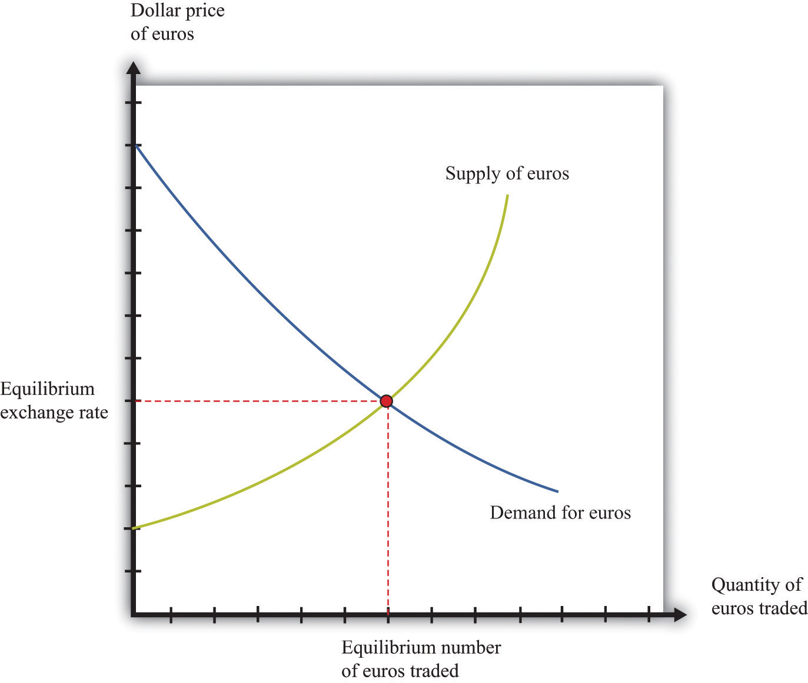
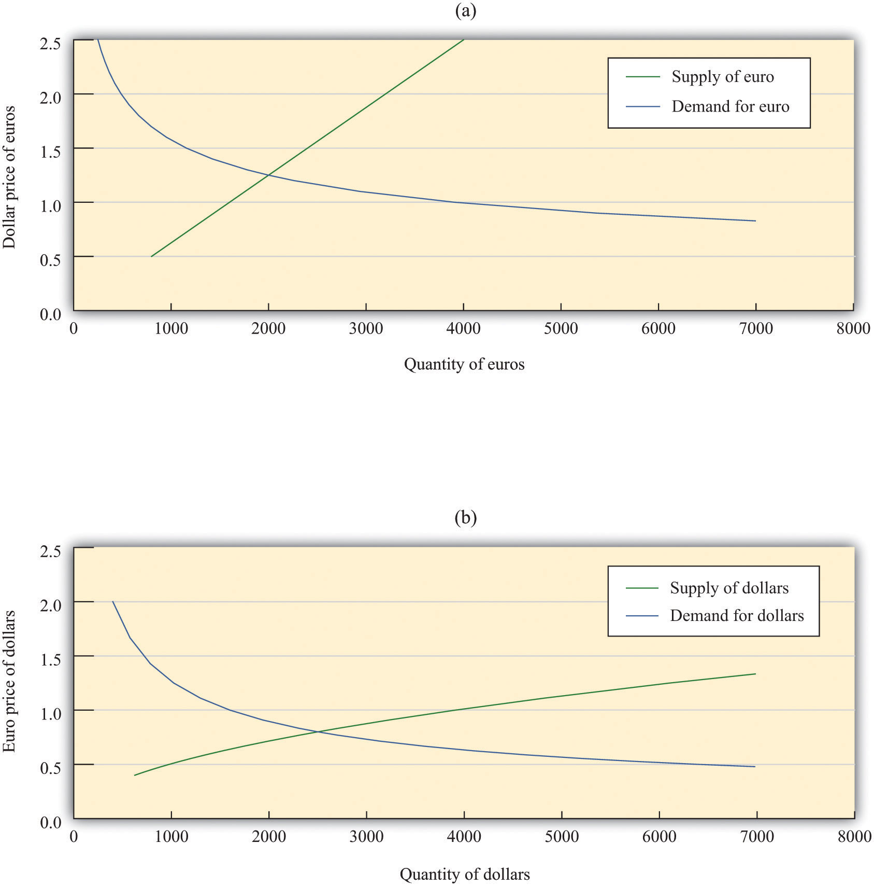
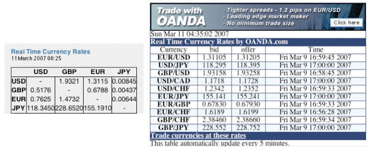
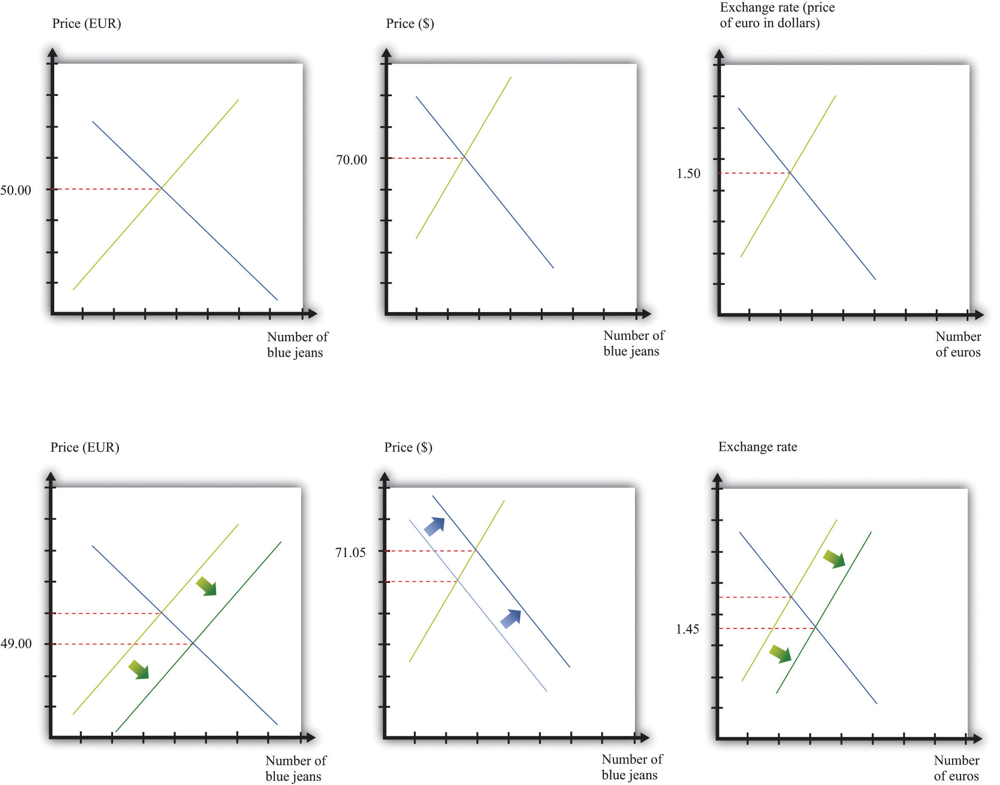
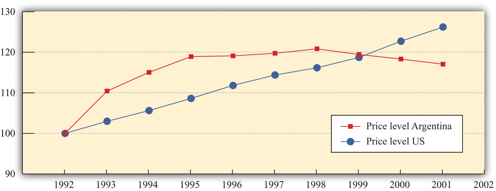

After you have read this section, you should be able to answer the following questions:
As we all know, there are multiple currencies in the world. These are most often associated with a single country: the yen in Japan, the yuan in China, the peso in Mexico, and so on. Sometimes many countries will use the same money, with the leading example being the use of the euro by the member countries of the European Union (http://ec.europa.eu/economy_finance/euro/index_en.htm). Sometimes multiple currencies are in use in a single place: when you land at a major European airport, such as Frankfurt, Germany, or Amsterdam, the Netherlands, you will see that you can buy a cup of coffee at the airport using many different currencies. Likewise, the US dollar is freely accepted in some countries in addition to the local currency, British pounds formerly were freely accepted in Ireland, and so on.
If you happened to find your $100 right before going on a trip to another country, you might decide to use it to buy the money of that country. For example, if you were about to take a trip to Canada, you could take the bill into a bank or a foreign exchange merchant and exchange it for Canadian dollars. If you want to buy goods and services in Canada, you need Canadian dollars because they are the medium of exchange in that country.
When you make such an exchange, you buy the local currency using your home currency. If you travel from the United States to Europe, you buy euros using dollars. The price you pay is the dollar price of the euro: the amount in dollars you must pay to obtain 1 euro. This is completely analogous to using a dollar to buy a bottle of soda, when you pay the dollar price of soda.
In practice, it is often unnecessary to carry out a physical exchange of notes and coins. In most countries, you can go to an automated teller machine (ATM) and withdraw local currency directly. Your bank deducts the equivalent sum in your home currency from your bank account. You are still carrying out an exchange, of course, but it is hidden from view, and you will see it only when you look at your next statement. The same is true if you make a purchase using a credit card.
Just as a US resident traveling to Europe wishes to buy euros with dollars, a visitor to the United States from, say, Holland will need to buy dollars with euros. The price she pays is the euro price of the dollar: the number of euros needed to obtain $1. The price of one currency in terms of another is called an exchange rateThe price of one currency in terms of another..
Toolkit: Section 31.20 "Foreign Exchange Market"
If you want to review the definition of an exchange rate, you will find more details in the toolkit.
If we think of two currencies—euros and dollars, for example—then there are two exchange rates to keep in mind: the price of euros in dollars and the price of dollars in euros. (You might suspect, correctly, that these two prices are linked; we return to this shortly.) In a world of 3 currencies, each has a price in terms of the other two currencies, so there are 6 (= 3 × 2) different prices. And in a world of 100 currencies, then for each one, there are 99 prices for the other currencies. So there are 100 × 99 = 9,900 prices to quote! A Zambian traveling to Armenia wants to know about the kwacha price of drams, a Malaysian traveling to Oman is interested in the ringgit price of rials, and so on.
Imagine a series of three visitors traveling from the United States to Europe. First, we have someone arriving on vacation. Chances are that she will want to exchange dollars for euros to have money to spend on hotels, meals, and so on. She also buys souvenirs in Europe—goods that she imports back to the United States. Our second visitor spends a lot of time in Europe for work purposes. He might open a bank account in, say, Germany. If he wanted, he could use this bank account to keep some of his wealth in Europe. He would buy euros with his dollars, deposit these euros in the bank to earn interest, and then—at some point in the future—he would take his money out of the bank in Germany and exchange the euros for dollars. (Later, we will consider how you can decide if this is a good investment strategy. For now, our point is that this type of financial investment is another source of demand for euros.) Our third visitor to Europe is a professional wine buyer who wants to purchase wine to sell in a US restaurant. She travels to the wine-growing regions of Europe (France, Spain, Italy, Germany, Portugal, etc.) and must exchange dollars for euros to pay for her purchases.
Our three visitors represent a microcosm of the transactions that take place in the foreign exchange market every day. Households and firms buy euros to pay for their imports of goods and services (souvenirs, wine, etc.). Many different goods and services are produced in Europe and sold in the United States. Some are imported by retailers, others by specialist import-export firms, and still others by individuals, but in all cases there is an associated purchase of euros using dollars.
The demand for euros also arises from financial investment by households, firms, and financial institutions. For example, a wealthy private investor in the United States may purchase stock issued by a company in Europe. To buy that stock, the US investor sells dollars and buys euros. In practice, such transactions are typically carried out by financial institutions that undertake trades on behalf of households and firms.
Most exchanges of dollars for euros do not actually entail someone traveling to Europe. Think about the foreign currency needs of a large multinational firm that produces goods and services in Europe but sells its output in the United States. The company naturally needs euros to pay workers and suppliers in Europe. Since it sells goods and thus earns revenues in dollars, the company must convert from dollars to euros very frequently. But you will not see the company’s chief financial officer in an airport line to exchange money. Instead, such currency operations are conducted through financial institutions, such as commercial banks.
Because of all these transactions, there are very active and sophisticated markets in which currencies are traded. We can represent these markets using the familiar supply-and-demand framework. Figure 24.4 "The Market for Euros" shows a picture of the market where euros are bought and sold. Buyers from the United States buy euros with dollars, and European traders sell euros in exchange for dollars.Of course, it is not literally the case that everyone who is buying is from the United States and that everyone selling is from Europe. If you have dollars, you can buy euros; if you have euros, you can sell them for dollars. But it is simpler to explain if we think of Europeans selling euros and Americans buying them. The supply and demand curves refer to the object being traded—euros. Thus the quantity of euros is shown on the horizontal axis. The price on the vertical axis is in dollars.
This market is just like any other you encounter. The demand curve is downward sloping: as the price of euros increases, the quantity of euros demanded decreases. This is the law of demandPeople consume more of a good when its price decreases and less of a good when its price increases. at work. As the price of euros increases, people in the United States will find that goods and services produced in Europe are more expensive. For example, suppose that 1 euro costs $1, and a Mercedes automobile costs EUR 50,000.There is an established set of three-letter symbols for all the currencies in the world. Euros are denoted by EUR, US dollars are denoted by USD, Australian dollars are denoted by AUD, and so forth. In this book we use the familiar $ symbol for US dollars and the three-letter symbols otherwise. A list of the currency codes can be found at http://www.xe.com/iso4217.php. Then its cost in dollars is $50,000. Now imagine that euros become more expensive, so that EUR 1 now costs $2. You now need $100,000 to buy the same Mercedes in Europe. So an increase in the price of euros means that Americans choose to buy fewer goods and services produced in Europe. Exactly the same logic tells us that an increase in the price of the euro makes European assets look less attractive to investors. A German government bond, a piece of real estate in Slovenia, or a share in a Portuguese firm might look like good buys when the euro costs $1 yet seem like a bad idea if each euro costs $2.
The supply curve also has a familiar upward slope. As the price of euros increases, more people in Europe sell their euros in exchange for dollars. They do so because with the higher dollar price of euros, they can obtain more dollars for every euro they sell. This means that they can buy more US goods and services or dollar-denominated financial assets.
Figure 24.4 The Market for Euros
This diagram shows the foreign exchange market in which euros are bought and sold. As the price of euros (in dollars) increases, more euros are supplied to the market, but fewer euros are demanded.
The price where supply equals demand is the equilibrium exchange rate. (The market also shows us the equilibrium number of euros traded, but here we are more interested in the price of the euro.)
Toolkit: Section 31.9 "Supply and Demand"
The foreign exchange market is an example of a market that we can analyze using the tool of supply and demand. You can review the supply-and-demand framework and the meaning of equilibrium in the toolkit.
So far, we have talked about buying foreign currencies to purchase either assets or goods and services. Another reason to buy foreign currencies is in the hope that you could make money by trading them. Let us think about how you might try to make money in the foreign exchange market. You might start with some dollars and exchange them for euros. Then you could take those euros and exchange them for dollars again. Is it possible that, by doing this, you could end up with more money than you started with? Could you buy euros cheaply and then sell them at a high price, thus making a profit?
Begin by supposing that dollars and euros are only two currencies in the world, and there are only two economies: the United States and Europe (a shorthand for “those European countries that use the euro”). Imagine that there are two separate markets: in the euro market, the price of 1 euro is $2; in the dollar market, the price of one dollar is EUR 1. With these two prices, there is money to be made by buying and selling currencies. Start with 1 euro. Sell that euro in the market for euros and obtain $2. Use those dollars to buy euros in the market for euros and obtain 2 euros. Now we are talking business: you started with 1 euro, made some trades, and ended up with 2 euros.
There is, of course, a catch. The prices that we just suggested would not be consistent with equilibrium in the foreign exchange markets. As we have just seen, there is a simple recipe for making unlimited profit at these prices, not only for you but also for everyone else in the market. What would happen? Everyone would try to capitalize on the same opportunity that you saw. Those with euros would want either to sell them in the euro market—because euros are valuable—or to use them to buy dollars in the dollar market—because dollars are cheap. Those with dollars, however, would not want to buy expensive euros in the euro market, and they would not want to sell them in the dollar market. Hence, in the euro market, the supply of euros would shift rightward, and the demand for euros would shift leftward. The forces of supply and demand would make the dollar price of euros decrease. In the dollar market, the supply of dollars would shift leftward, and the demand for dollars would shift rightward, causing the euro price of dollars to increase.
The mechanism we just described is arbitrage at work again. The arbitrage possibility between the dollar market for euros and the euro market for dollars disappears when the following equation is satisfied:
price of euro in dollars × price in dollar in euros = 1.When this condition holds, there is no way to buy and sell currencies in the different markets and make a profit. As an example, suppose that EUR 1 costs $2 and $1 costs EUR 0.5. These prices satisfy the equation because 2 × 0.5 = 1. Imagine you start with $1. If you use it in the dollar market for euros to buy euros, then you will have EUR 0.50. If you then use these in the euro market for dollars to buy dollars, you will get $2 for each euro you supply to the market. Since you have half of a euro, you will end up with $1, which is what you started with. There is no arbitrage opportunity.
By now you have probably realized that there is a close connection between the market for euros and the market for dollars (where dollars are bought and sold using euros). Whenever someone buys euros, they are selling dollars, and whenever someone sells euros, they are buying dollars. In our two-country, two-currency world, the market for euros and the market for dollars are exactly the same market, just looked at from two different angles.
Figure 24.5 The Market for Euros and the Market for Dollars
Here we show the market where euros are bought and sold with dollars (a) and the market where dollars are bought and sold with euros (b). Because of arbitrage, these are just two different ways of looking at the same market.
We illustrate this in Figure 24.5 "The Market for Euros and the Market for Dollars". In part (a) of Figure 24.5 "The Market for Euros and the Market for Dollars", we show the market where euros are bought and sold, and in part (b) of Figure 24.5 "The Market for Euros and the Market for Dollars" the market where dollars are bought and sold. The supply curve for dollars is just the demand curve for euros, and the demand curve for dollars is the same as the supply curve for euros. For example, suppose 1 euro costs $2. From part (a), we see that, at this price, people would supply EUR 3,200. In other words, there are individuals who are willing to exchange EUR 3,200 for $6,400. If we think about this from the perspective of the market for dollars, these people would demand $6,400 in the market when $1 costs EUR 0.50—and, indeed, we see that this is a point on the demand curve in part (b). The market is in equilibrium when EUR 1.00 costs $1.25, or equivalently when $1 costs EUR 0.80. At this exchange rate, holders of dollars are willing to give up $2,500, and holders of euros are willing to give up EUR 2,000.
We live in a world with many different currencies, not just two. Figure 24.6 "Exchange Rates" shows some exchange rates from http://www.oanda.com, a site that provides current and historical data on exchange rates and that is also an online market where you can trade currencies. So, on March 11, 2007, just after midnight, the price of a euro in dollars was 1.3115. At the same time, the price of a dollar in British pounds was 0.5176.
Figure 24.6 Exchange Rates
These tables come from http://www.oanda.com. The table on the left shows exchange rates among four currencies and the table on the right shows the rates at which you can actually conduct trades at this site.
If you look at the table on the left side of Figure 24.6 "Exchange Rates", you see that it provides both the dollar price of the euro and the euro price of the dollar (and similarly for the other currency pairs). Tables such as this one have already built in the arbitrage condition, so you cannot keep buying and selling the same currency in exchange for dollars and make money.
When there are multiple currencies, we can imagine more complicated trading strategies. As an example, consider the following string of transactions.
If you end up with more than $1, then there are profits to be made buying and selling currencies in the manner outlined here. Can you make a profit this way? The answer, once again, is no. If you could, then the markets for foreign currency would not be in equilibrium: everyone would buy euros with dollars, sell them for yen, and then sell the yen for dollars. Once again, exchange rates would rapidly adjust to remove the arbitrage opportunity.
To verify this, let us go through this series of transactions using Figure 24.6 "Exchange Rates". One dollar will buy you EUR 0.7625. Now take these and use them to buy yen. You will get 0.7625 × 155.1910 = JPY 118.3331. Now, use these yen to buy dollars, and you will get 118.3331 × 0.00845 = $0.9999. You start with $1; you end with $1 (give or take a rounding error).
These calculations assume that there are no costs to trading foreign currencies. In practice, there are costs involved in these exchanges. A traveler arriving at an airport in need of local currency does not see rates posted as in the left-hand table in Figure 24.6 "Exchange Rates". Instead, they see something that looks like the right-hand table, where rates are posted in two columns: bid (buying) and offer (selling). The bid is a statement of how much the currency seller is willing to pay in local currency for the listed currency. The offer column is the price in local currency at which the seller is willing to sell to you. Naturally, the offer price is bigger than the bid: the seller buys currencies at a low price and sells them at a high price. The difference between the bid and offer prices is called the spread. The existence of the spread means that if you try to buy and sell currencies with the dealer, you will actually lose money. At the same time, the spread creates a profit margin for the dealer and thus pays for the service that the dealer provides.
We have talked about arbitrage with goods and arbitrage with foreign currencies. We can also put the two together to study the prices of goods that are traded across international borders. Arbitrage of goods from one country to another is a bit more complicated because it involves buying and selling currencies as well as goods. To see how this works, imagine you are going on a trip to Europe. You are allowed two suitcases filled with belongings free of charge on the airplane. What about filling a suitcase full of new blue jeans, transporting them to Europe, and then selling them there? Could you make money that way?
Suppose that the dollar price of 1 euro is $1.50. Further, suppose that the price of a pair of blue jeans is $70.00 in the United States and EUR 50.00 in Paris. Consider the following sequence of actions.
The question is whether you can make money in this way. The answer is given by how many dollars you will have in your pocket at the end of these steps. When you sell the jeans in Paris, you will have EUR 50.00. If the dollar price of euros is $1.50, then by selling the jeans in Paris you will get 50 × $1.50 = $75. This is a profit of $5 for each pair of jeans—you are in business.
Once again, the opportunity for arbitrage suggests that this situation is unlikely to persist. Entrepreneurs will buy jeans in the United States, take them to Paris, and sell them there. Market forces in three different markets will work to eliminate the profit. First, the activity of arbitrageurs will increase the demand for jeans in the United States, causing the US price of jeans to increase. Second, the increased supply of jeans in Paris will cause the price there to decrease. And third, there will be an increased supply of euros in the foreign exchange market, which will cause the euro to depreciate. This is shown in Figure 24.7 "International Arbitrage Restores the Law of One Price".
Figure 24.7 International Arbitrage Restores the Law of One Price
When blue jeans cost $70 in the United States and EUR 50 in France, and the exchange rate is $1.50 per euro, arbitrageurs can make a profit by importing blue jeans to Europe from the United States.
These price changes continue until there are no profits to be made by arbitrage. Exactly how much of the adjustment will take place in each market depends on the slopes of the supply and demand curves. In Figure 24.7 "International Arbitrage Restores the Law of One Price", we have drawn the new equilibrium as follows: blue jeans cost EUR 49 in Europe and $71.05 in the United States; and the exchange rate is $1.45 per euro. At these prices,
price of blue jeans in dollars = price of blue jeans in euros × price of euro in dollars,and there is no longer any possibility of arbitrage. This is another illustration of the law of one price. If we were literally talking just about arbitrage in blue jeans, most of the adjustment would take place in the markets for blue jeans in the United States and Europe, and there would be a negligible effect on the exchange rate. But if the same kinds of arbitrage opportunities exist for lots of goods, then there will be an impact on the exchange rate as well.
For tradable goodsGoods that can be easily and cheaply transported from one place to another, which means they can be easily arbitraged., the law of one price says that the
dollar price of good = euro price of good × dollar price of euro.When this condition holds, there are no arbitrage profits to be gained by purchasing the good with dollars, selling it for euros, and then buying dollars with euros. Likewise, if this condition holds, there are also no arbitrage profits from purchasing the good with euros, selling it for dollars, and then buying euros with dollars. In general, we expect that such arbitrage will occur very quickly. There are no profits to be made from arbitrage when the law of one price holds.
The Economist has kept track of the price of a McDonald’s Big Mac in a number of countries for many years, creating something they call the “the Big Mac index.” Table 24.1 "The " contains some of their data. The last column of Table 24.1 "The " gives the price of a Big Mac in each selected country in July 2011, converted to US dollars at the current exchange rate. That is, the last column is calculated by dividing the local currency price (the second column) by the exchange rate (the third column). A Big Mac costs $4.07 in the United States but more than twice as much in Norway. China is a real deal at only $1.89.
Table 24.1 The Economist’s Big Mac Index, July 2011
| Country | Local Currency Price of Big Mac | Local Currency Price of a Dollar | Price in US Dollars |
|---|---|---|---|
| United States | USD 4.07 | 1 | 4.07 |
| Norway | NOK 45 | 5.41 | 8.31 |
| Euro Area | EUR 3.44 | 0.70 | 4.93 |
| Czech Republic | CZK 69.3 | 17.0 | 4.07 |
| China | CNY 14.7 | 6.45 | 1.89 |
Source: “The Big Mac Index: Currency Comparisons, to Go,” Economist online, July 28, 2011, accessed August 2, 2011, http://www.economist.com/blogs/dailychart/2011/07/big-mac-index.
The price differentials in this table violate the law of one price: there is (apparently) profit to be made by buying Big Macs at a low price and selling them at a high price. Applying the principle of arbitrage, we should all be flying to China, buying Big Macs, traveling to Norway, and selling them on the streets of Oslo. Of course, there are a few small problems with this scheme, such as the following:
This long list easily explains the deviations from the law of one price for Big Macs. Similar considerations explain why the law of one price might not hold for other goods. The law also does not apply to services, such as tattoos, since these cannot be imported and exported. The law of one price is most applicable to goods that are homogeneous and easily traded at low cost. Economists use the law of one price as a guide but certainly do not expect it to hold for all products in all places.
There is another way to interpret the finding that Big Macs do not cost the same in each country. The Economist uses this information to draw conclusions about the values of different currencies and how these values are likely to change over time.
From this perspective, the Big Mac is more expensive in Europe than in the United States because dollars are cheap in Europe. Put differently, we say that the dollar is undervaluedThe price of a currency is too low compared to the ratio of price levels in the two countries. relative to the euro. If the price of a dollar in euros were 0.85 instead of 0.70, then a Big Mac would cost the same in the United States and Europe. Completely equivalently, we can say that that the euro is overvaluedThe price of a currency is too high compared to the ratio of price levels in the two countries. relative to the dollar. With this in mind, we might expect the undervalued dollar to increase in value relative to the euro. That is, we would expect the price of a dollar in euros to increase. Similarly, we would conclude that the Norwegian kroner is overvalued relative to the dollar, the Chinese yuan is undervalued, and the Czech Koruna is neither overvalued nor undervalued.
To see how this works more generally, look back at our arbitrage condition for blue jeans. If we divide both sides by the price of blue jeans in euros, we get
This equation says that, according to the law of one price, the dollar price of the euro should equal the dollar price of blue jeans divided by the price of blue jeans in euros. This is exactly the kind of calculation that underlies the Big Mac index, only with blue jeans instead of Big Macs. Equivalently, the law of one price says that the
Suppose we think about this equation applying (approximately) to all goods and services. We can then get a better prediction of the exchange rate by looking at a general price index in each country:
Because of all the reasons why the law of one price does not literally hold, economists certainly do not expect this equation to give an exact prediction of the exchange rate. Nevertheless, it can provide a useful indication of whether a currency is undervalued or overvalued.
A currency is undervalued if, following this equation, its price is too low compared to the ratio of price levels in the two countries. A currency is overvalued if, following this equation, its price is too high compared to the ratio of price levels in the two countries. As in our discussion of the euro, if a currency is overvalued, then we would expect its value to decrease over time. This is called a depreciationA decrease in the price of a currency. of the currency. Likewise, we would expect the price of an undervalued currency to increase over time. This is called an appreciationAn increase in the price of a currency. of the currency.
The market forces behind these currency movements come from the buying and selling of currencies for trading purposes. If the Chinese yuan is undervalued, goods produced in China will be relatively cheap in US dollars. The demand for Chinese exports will be high, and this will lead to a large demand for the yuan. Eventually the dollar price of the yuan will increase—that is, the yuan will appreciate, and the dollar will depreciate.
Even though the law of one price does not literally hold for all goods and services, it reminds us that the value of $1 in the United States is linked to its value in the rest of the world. As a result, we expect that price level changes are likely to lead to changes in the exchange rate. We see this more clearly if we write our previous equation in terms of growth rates. Using the formula for growth rates, we find the following:
growth rate of price of dollar in euros = growth rate of price of European bundle of goods− growth rate of price of US bundle of goods.Toolkit: Section 31.21 "Growth Rates"
The formulas for using growth rates can be found in the toolkit.
If the bundle of goods in each country corresponds roughly to the goods in the Consumer Price Index (CPI)A price index that uses as the bundle of goods the typical purchases of households., then the growth rate of these prices corresponds to the inflation rateThe growth rate of the price index from one year to the next.. The growth rate of the exchange rate is just another term for the percentage appreciation of the currency. Thus we get the following:
percentage appreciation of the dollar ≈ European inflation rate − US inflation rate.So, if the inflation rate in the United States is higher than it is in Europe, we expect the euro price of the dollar to decrease. We expect depreciation of the dollar if US inflation exceeds European inflation. Inflation reduces the real value of money domestically; it will also tend to reduce the value of money in terms of what it can purchase in the rest of the world. This makes sense. If our currency is becoming less valuable at home, then we should also expect it to become less valuable in the rest of the world.
The law of one price is connected to another measure of the exchange rate—the real exchange rateA measure of the price of goods and services in one country relative to another when prices are expressed in a common currency.. This exchange rate is a measure of the price of goods and services in one country relative to another when prices are expressed in a common currency. It is about exchanging goods, rather than money, across countries.
The real exchange rate between the United States and Europe is given as follows:
You can think of the real exchange rate as the number of units of European gross domestic product (GDP) you can get for one unit of US GDP.Let us check the units of the real exchange rate. The US price level over the European price level is in dollars/euros: it is the price of a unit of US real GDP divided by the price of a unit of European real GDP. The nominal exchange rate is measured in euros per dollar. Thus the units are as follows:The dollars and the euros cancel out in this expression, so the real exchange rate is just a number. For example, if the price level in the United States is $1,600, the price level in Europe is EUR 400, and the price of dollars in euros is EUR 0.5, then the real exchange rate is as follows:
One unit of US GDP will get you two units of European GDP.
The real exchange rate is intimately linked to the law of one price. The easiest way to see this is to suppose that we measure US real GDP and European GDP in the same units: that is, suppose we use the same bundle of goods in each case. We know that the law of one price should hold for tradable goods—that is, goods for which arbitrage is possible and practical. If every good that went into GDP were tradable, then the law of one price would hold for every good, and the real exchange rate would equal 1. If the real exchange rate was not 1, you could make arbitrage profits by buying and selling “units of GDP.”
As before, suppose the US price level is $1,600, the European price level is EUR 400, and the nominal exchange rate (dollars per euro) is 0.5. Imagine that US GDP and European GDP measure the same bundle of (tradable) goods. Then you could take $800 and buy EUR 400. With these euros, you could buy a basket of goods in Europe. You could sell this basket in the United States for $1,600. The law of one price is violated. We would expect the following:
Because arbitrage is not possible for all goods and services, we do not expect—nor do we observe—the real exchange rate to be exactly one. But this benchmark is still useful in understanding movements in the real exchange rate.
The real exchange rate matters because it is the price that is relevant for import and export decisions. Suppose you are trying to decide between buying a mobile phone manufactured in the United States and one manufactured in Finland. If the dollar appreciates against the euro, then the US phone retailer needs fewer dollars to purchase euros, so Finnish phones will be cheaper in US stores. If prices decrease in Finland, the imported phone again becomes relatively cheaper. If prices increase in the United States, the US phone will be more expensive. In other words, increasing prices in the United States, decreasing prices in Finland, and appreciation of the dollar all make you more likely to buy the imported phone rather than the domestically produced phone.
More generally, anything that causes the real exchange rate to increase will make imports look more attractive compared to goods produced in the domestic economy. Examined from the point of view of Europe, the same increase in the real exchange rate makes US goods look more expensive relative to goods produced in Europe, so Europeans will be likely to import fewer goods from the United States. An increase in the real exchange rate therefore leads to an increase in US imports and a decrease in US exports—that is, it leads to a decrease in net exportsExports minus imports..
The real exchange rate can and does vary substantially over time. Argentina in the 1990s provides a nice illustration of real exchange rates in action.We discuss this in more detail in Chapter 26 "Inflations Big and Small". Argentina had a currency boardA fixed exchange rate regime in which each unit of domestic currency is backed by holding the foreign currency, valued at the fixed exchange rate. during this period. Under a currency board, a country maintains a fixed exchange rate by backing its currency completely with another currency. Although Argentina did have its own currency (the Argentine peso), each peso in circulation was backed by a US dollar held by the Argentine central bank. You could at any time exchange pesos for dollars at a nominal exchange rate of 1.
Figure 24.8 "The Real Exchange Rate in Argentina" shows what happened to prices in Argentina and the United States over this period. Look at 1992–95. Both countries had some inflation. But prices were increasing faster in Argentina than in the United States. The real exchange rate (Argentina–United States) is given by
because the price of the peso in dollars was 1. Therefore the real exchange rate appreciated as Argentine inflation outpaced US inflation.
The appreciation of the real exchange rate meant that Argentine goods became more expensive in other countries, so Argentine exports became less competitive. (The problem was compounded by the fact that the US dollar [and hence the peso] also appreciated against the currencies of neighboring countries such as Brazil.) Without the currency board, it would have been possible for the nominal exchange rate (price of the peso in dollars) to decline, offsetting the effects of the inflation rate. Instead, this appreciation of the real exchange rate ended up causing substantial economic problems in Argentina in the 1990s. In the second half of the decade, the real exchange rate began to depreciate because the inflation rate in Argentina was lower than in the United States. The appreciation at the start of the decade had been so large, however, that the real exchange rate in 1999 was still higher than it had been in 1992.
Figure 24.8 The Real Exchange Rate in Argentina
Argentina’s real exchange rate appreciated between 1992 and 1995 because the nominal (US dollar–Argentine peso) exchange rate was constant and equal to one, and the price level increased more rapidly in Argentina than in the United States.
Source: CPI inflation figures from International Monetary Fund World Economic Outlook database (http://www.imf.org/external/pubs/ft/weo/2006/01/data/dbcselm.cfm?G=205) and Bureau of Labor Statistics (http://www.bls.gov).
If countries want to have a permanently fixed exchange rate, there is an option that is more radical than a currency board. Countries can decide to adopt a common currency, like the European countries that adopted the euro. There are several reasons why countries might decide to take such a course of action. The first advantage of a common currency is that it enhances the role of money as a medium of exchange. There is no longer a need to exchange one currency for another, making it easier to trade goods and services across countries. People do not have to deal with the inconveniences of exchanging currencies: individuals do not have to exchange cash at airports, and firms do not need to manage multiple currencies to conduct international business. In the jargon of economics, a single currency removes transaction costs. These costs might be individually small, but they can add up when you consider just how many times households and firms needed to switch from one of the euro area currencies to another.According to studies supporting a common currency, these gains from reduced transactions costs were substantial. One of the key analyses was the Delors report. A summary of that report is available at “Phase 3: the Delors Report,” European Commission, October 30, 2010, accessed August 22, 2011, http://ec.europa.eu/economy_finance/euro/emu/road/delors_report_en.htm. A complete report on the history of the euro is available at “One Currency for One Europe: The Road to the Euro,” European Commission, 2007, accessed August 22, 2011, http://ec.europa.eu/economy_finance/publications/publication6730_en.pdf.
One way to picture this advantage is to imagine the reverse. Suppose, for example, that each state in the United States decided to adopt its own currency. Trade across state lines would become more complicated and more costly. Even more starkly, imagine that your hometown had its own currency, so you had to exchange money whenever you traveled anywhere else.
A second advantage of a single currency is that it makes business planning easier. A firm in Belgium can write a contract with another firm in Spain without having to worry about the implications of currency appreciation or depreciation. Thus an argument for the move to a single currency was that such a change was likely to encourage trade among countries of the European Union. Again, imagine how much more complicated business would be in the United States if each state had its own freely floating currency.
Finally, a common currency enhances capital flows. Just as it is easier for businesses to trade goods and services, it is also easier for investors to shift funds from country to country. With a common currency, investors do not have to pay the transactions costs of converting currencies, and they no longer face the uncertainty of exchange rate changes. When capital flows more easily across borders, investment activity is more productive, enhancing the growth of the countries involved.